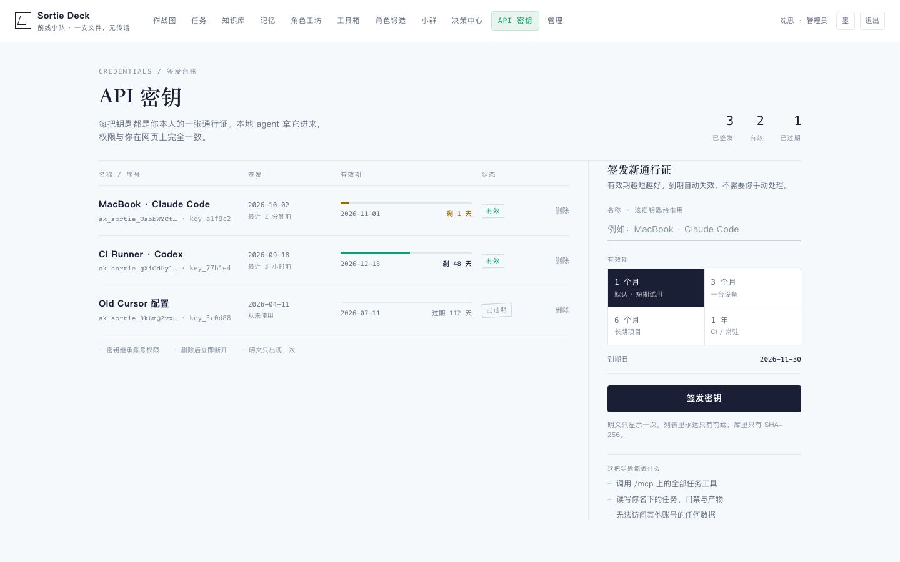
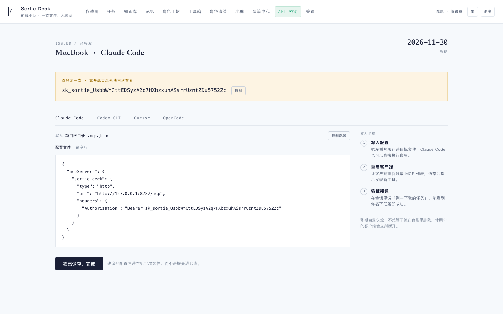
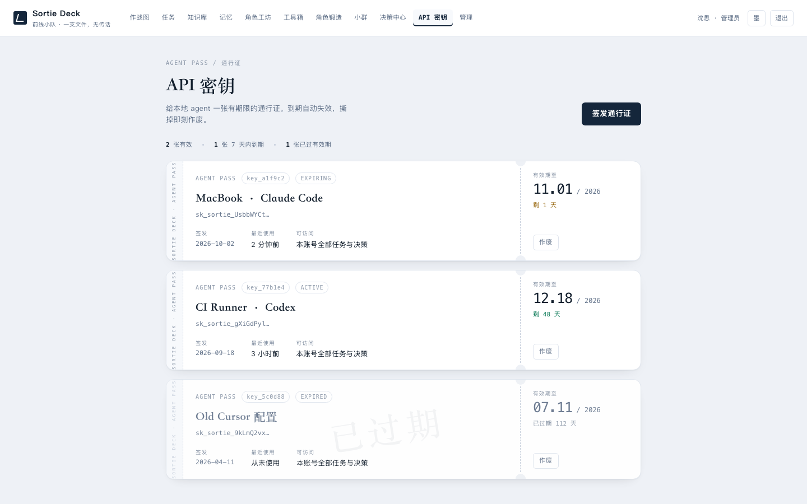
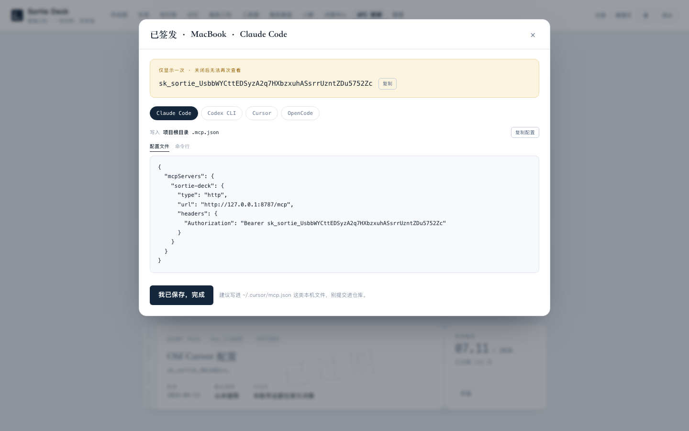
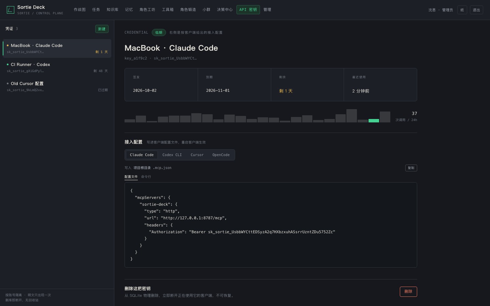
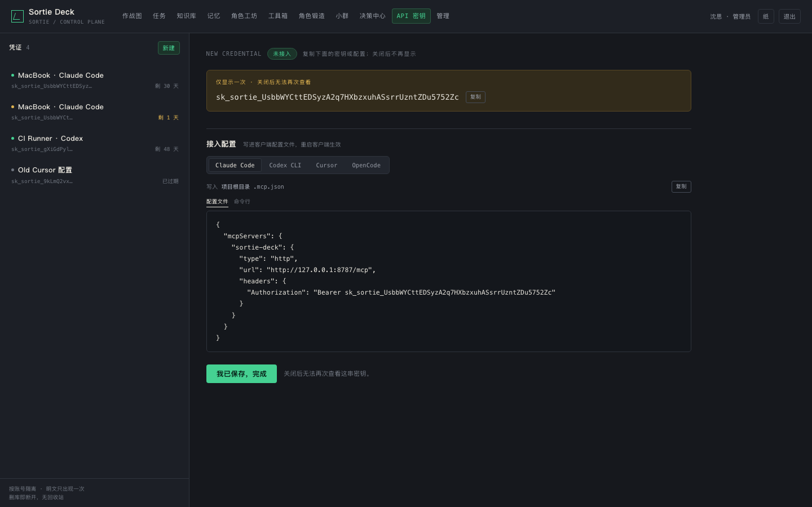

同一份内容、同一套交互（新建 → 选 1/3/6/12 个月 → 一次性明文 → 四客户端接入 → 删除即物理删除），三套设计逻辑。每版都支持「纸 / 墨」双主题；在地址后加 #reveal 可直接看签发后的状态。
示意数据 · 四套客户端配置片段为真实格式（2026-10 核对官方文档）
把密钥页当一本台账：左边是签发记录，右边是签发栏，没有卡片和阴影，靠细线、字级和留白建立层级。有效期用一条「寿命细线」表示剩余比例，过期是一枚歪斜的戳记。最贴近现有产品气质，改造成本最低，长期看最不腻。


每把密钥是一张通行证：左侧竖排撕口条、中间持证人信息、右侧票根只放「到期日 / 剩余天数 / 作废」。签发台带实时预览——选 1 个月还是 1 年，证件上的日期立刻变。「密钥有期限」这件事一眼就懂，最有记忆点；适合想让这个页面成为产品小亮点。


左轨凭证列表 + 右侧接入检查器，密而有序。签名细节是每把钥匙的近 24 小时调用柱状图——「这把钥匙还活着吗」变成可读的形状；接入配置按客户端分页签，切换即看目标文件与片段。重度开发者天天用最顺手，也最像一块专业控制台。


| 想稳、想统一 | 选 v1：它就是你现有编辑部风格的自然延伸，页面不会抢任务的戏。 |
| 想让人记住 | 选 v2：通行证模型把「有效期」讲得最清楚，截图也最好看。 |
| 想给重度用户 | 选 v3：信息密度最高，查配置、看用量、删钥匙都在一屏内。 |
| 想混搭 | 例如「v3 的分栏 + v2 的到期日大字」，告诉我组合方式即可。 |